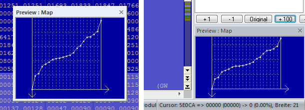
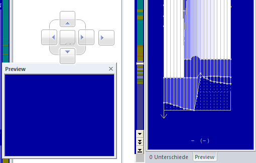

|
Floating / dockable dialogs |

  
|
|
Floating / dockable dialogs |
|

left: floating dialog; right: docked dialog
Floating dialogs:
WinOLS supports several (so-called) "floating" dialogs. These are dialog windows that are shown above the normal workspace without blocking it. This means that you can work with WinOLS normally even though the window is open and (as it looks like it) lies above the workspace. This allows you for example to work while the search window is open and shows it results.
You may toggle these dialogs separately (with their respective hotkey, icons and menu items). Or you may use the tab key (left of the Q-key) to toggle all windows that can currently be seen.
You can recognize a floating dialog by its smaller title bar (the blue bar where the name of the window is shown), compared to normal windows.
All floating windows are "magnetic". This means, if you move the window and get close to another window or the screen border, then it will jump exactly there to support a "nice" positioning.
The following windows float:
| · | Differences * |
| · | Preview * |
* Only 'floating' if it's not docked
Dockable dialogs:
Three windows are special, because they can have to states. They can be docked to the window border (left or right) and then aren't floating windows any more. You may toggle between the two states (docked / floating) by double-clicking its headline. This works with the following windows:
Advanced docking:
By clicking and dragging the window title you can dock the window at the desired location. This markers can help you:

left: helping markers; right: Two dialogs as "tabs"
Move the mouse cursor on one of the arrow markers and release the mouse button to dock the window to this border. Use the middle field (without arrow) to combine two dockable windows. The windows will be placed in the same location and can be switched with tabs at the bottom. To end the "tabbed" state, start the drag+drop not at the window title, but on the respective tab.